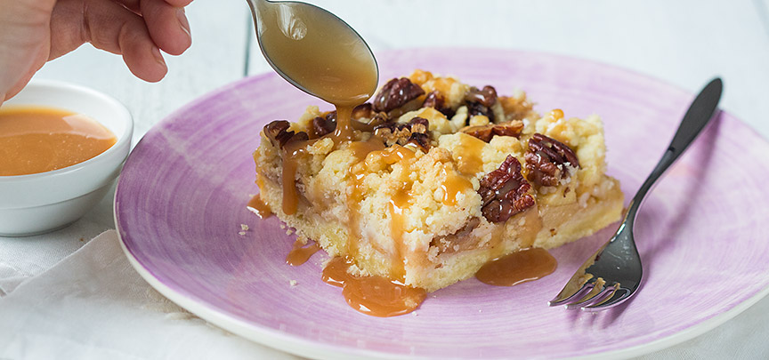

Appelcrumble
Lekkere warme applecrumble met een krokante kruimellaag, lekker als gebak of als dessert met een bol ijs!
Ingrediënten
- 310 gram
- 125 gr maïzena
- 100 gr suiker
- 250 gr boter<
- 1 ei
- 4 appels
- snuf kaneel
- 1 zakje vanillesuiker
- beetje citroensap
- 50 gr pecannoten
- Botoer of olie om in te vetten
Bereidingswijze
- Verwarm de oven op 160 graden. Leg een stuk bakpapier op de bodem van de bakvorm en vet de rest in met een beetje
boter. Zeef de bloem en maizena samen in een kom. Roer de suiker er door. Snijd de boter ik kleine blokjes en voeg
toe aan het meel. Kneed dit met je vingers tot een kruimelig deeg. Verdeel het deeg in 2 helften.
- Zet één kom weg en voeg aan de andere kom een eitje toe en een klein beetje bloem en kneed tot een bal. Verdeel
het deeg over de bodem, je kunt het eerst uitrollen of met je handen over de bodem plat drukken. Prik wat gaatjes
in de bodem en zet ongeveer 20 min in de oven.
- Schil ondertussen de appels en snijd in blokjes. Voeg een paar druppels citroensap toe tegen het verkleuren en schep
de vanillesuiker en kaneel er door. Hak de pecannoten grof en schep door de overgebleven deegkruimels. Haal de vorm
uit de oven en verdeel de appels er over. Bestrooi met de noten crumble en druk ietsjes aan. Zet de appel kruimel taart
ongeveer 50 min in de oven, tot hij iets bruin begint te kleuren.
- Maak ondertussen de karamelsaus. Verhit de suiker en het water in een pannetjes zonder te roeren. Als de bellen licht
bruin beginnen te kleuren zet je het vuur uit en roer je de slagroom er door met een garde. Laat het mengsel nog iets
indikken en daarna afkoelen. Serveer de appel kruimel taart met de karamelsaus.

Tip: in plaats van een vierkante ovenvorm kun je ook een ronde vorm of ovenschaal gebruiken of losse kleine eenpersoons
ovenschaaltjes. Ook lekker met wat rozijnen in de vulling.
Klik hier om terug te gaan!